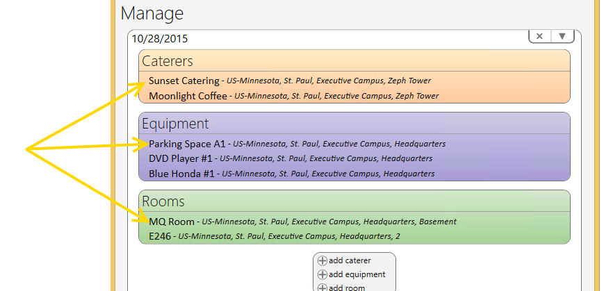

Delete Meeting/Resources
Delete Meeting (and all resource reservations attached)
- Select the meeting to delete from the Outlook Calendar.
- Launch the Meeting Planner tool to open the existing meeting.
- Select the Delete button from ‘Manage’ window to delete the entire reservation (to include the room and all resources).
IMPORTANT: Although all resources are deleted from Meeting Planner application, the meeting time and date will remain reserved on the Outlook Calendar. Manually delete the time/date reservation from Outlook.
NOTE: Meetings deleted in Meeting Planner and the Outlook Calendar are automatically deleted in all MP applications.
Delete Resources
Delete Individual Reserved Resources (E.G., ROOM, CATERING, OR EQUIPMENT)
- Select the meeting, from the Outlook Calendar, that is attached to the resource to delete.
- Launch the Meeting Planner tool to open the existing meeting.
- Select the resource to delete and open and view the reservation.

- Select the Delete button from the top right corner of the window to delete the resource.
- Select the Checkmark to confirm the deletion. Select Delete button to save the resource reservation and return back to the ‘Manage’ window.
NOTE: Resource reservations that are assigned to a room must be reassigned if the room reservation is released.
NOTE: Reservations deleted in MP6 are automatically deleted in all MP applications.